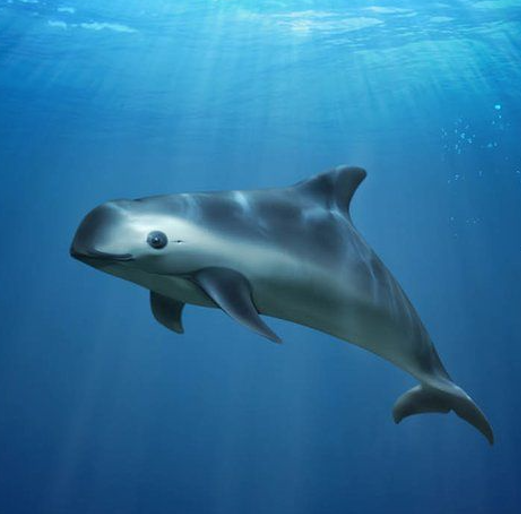

Virginia Vista
Vaquita Vally
Fun facts about the Virginia Vista and vaquita
Virginia Vista is a golf team which is very famous in Virginia.
Most professional golfers play to handicaps of 4 and 6, and that’s before they enter the professional ranks
people come from different countries to enjoy this sport
The vaquita, Phocoena sinus, is the world's smallest cetacean, weighing around 55 kilos.
Females grow to be around 1.5 metres long.
They eat small fish and squid.

Index page